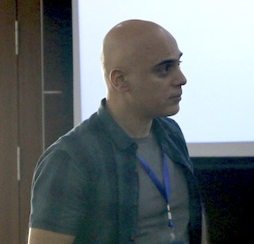

Professor of Mathematics
Taylan Şengül
Department of Mathematics · Marmara University
I am an applied mathematician working on nonlinear dynamical systems and partial differential equations. My research focuses on dynamic transitions, bifurcation and pattern formation, with applications to classical and geophysical fluid dynamics.
Research
- Transition numbers in closed form · explicit formulas for the transition coefficient of 1D reaction–diffusion equations.
- Symmetry and pattern selection · what degenerate transitions select; currently Hopf bifurcation under O(2) symmetry.
- Fluids · the same machinery applied to the thermohaline circulation, zonal ocean flows and Poiseuille flow.
Notes
- · At our research meeting I gave a talk on the paper “Wave Selection at an O(2)-Hopf Bifurcation in Conservative Two-Component PDE Systems” (arXiv:2608.24376, slides).
Teaching resources
Fall 2026 courses.
Older courses, lecture notes and the full exam archive are on the teaching page.